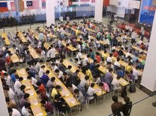
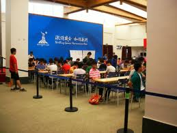

第三届广东高校棋类联赛决赛将于5月26-27日在广州棋院举办
#1 第三届广东高校棋类联赛决赛将于5月26-27日在广州棋院举办 作者：无尽 发表时间：2012-5-6 15:02:18
第三届广东省大学生棋类联赛决赛
竞赛规程
一、 主办单位：广东棋文化促进会、华南理工大学团委
二、 承办单位：华南理工大学棋类协会
三、 协办单位：广州棋院 、广东东湖棋院
四、 比赛日期：2012年5月26、27日
/*760*90，创建于2012-2-9*/ var cpro_id = 'u761865';
#2 Re:第三届广东高校棋类联赛决赛将于5月26-27日在广州棋院举办 作者：悟石 发表时间：2012-5-6 15:06:20
沙发!第一次坐
#3 Re:无尽【==第三届广东高校棋类联赛决赛将于5月26-27日在广州棋院举办==】 作者：无尽 发表时间：2012-5-6 15:21:15
赛事规模预计达500多人，本次比赛首次加入五子棋项目。下面是第二届的一些图片：


［此帖子已被 无尽 在 2012-5-6 15:22:03 编辑过］
#4 Re:第三届广东高校棋类联赛决赛将于5月26-27日在广州棋院举办 作者：梧桐风 发表时间：2012-5-6 16:29:35
规模真大啊#5 Re:第三届广东高校棋类联赛决赛将于5月26-27日在广州棋院举办 作者：伤情路 发表时间：2012-5-7 8:47:31
好多人啊~
#6 Re:第三届广东高校棋类联赛决赛将于5月26-27日在广州棋院举办 作者：伤情路 发表时间：2012-5-7 8:47:56
好多人啊~
［ 奇林 于 2012-5-8 22:29:41 时花20金币送鲜花一朵］
#7 Re:第三届广东高校棋类联赛决赛将于5月26-27日在广州棋院举办 作者：水晶铃铃 发表时间：2012-5-8 22:09:55

［ 奇林 于 2012-5-8 22:30:05 时花20金币送鲜花一朵］
#8 Re:第三届广东高校棋类联赛决赛将于5月26-27日在广州棋院举办 作者：吉小鼠 发表时间：2012-5-8 23:20:02
我想感慨的是好多学校啊。。。。。。。